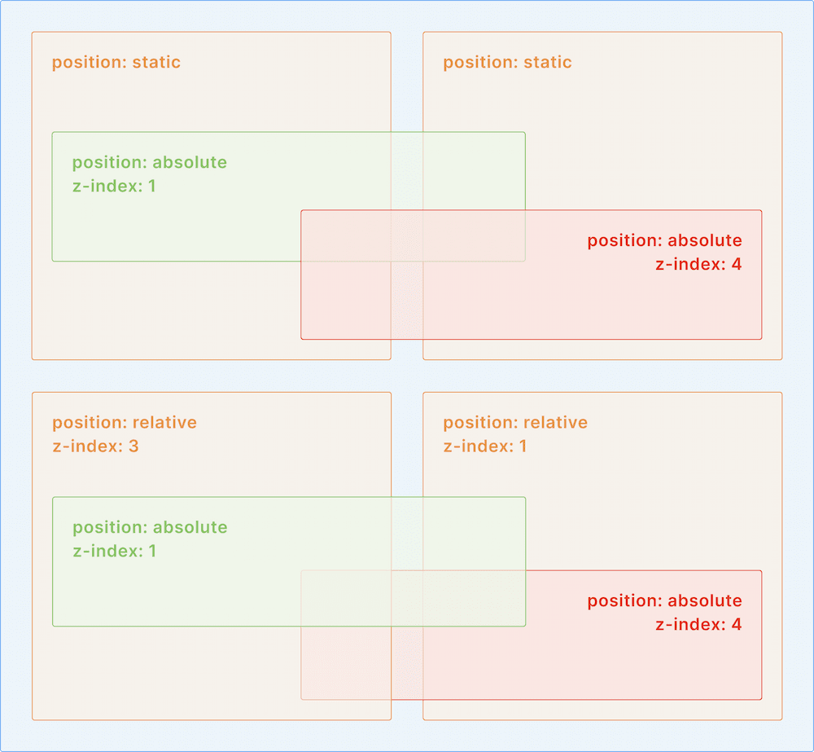

Позиционирование.
CSS-свойство position задаёт режим позиционирования элементов. Значением по умолчанию является static, которое обозначает «обычное позиционирование». Элементы с другими значениями этого свойства называются позиционируемыми и их конечное местоположение определяется свойствами top, right, bottom и left. Позиционируемые элементы могут перекрывать элементы с обычным позиционированием.
Относительное позиционирование.
Значение relative свойства position обозначает «относительное позиционирование».
Относительно позиционированный элемент можно перемещать относительно его исходного положения:
- top — смещение вниз.
- right — смещение влево.
- bottom — смещение вверх.
- left — смещение вправо.
Отрицательные значения этих свойств смещают элемент в противоположную сторону.
Пример:
position: relative;
bottom: 5px;
left: -5px;Относительно позиционированный элемент остаётся в потоке документа и остальные элементы не «замечают» его смещения.
В реальных проектах относительное позиционирование может использоваться для создания декоративных эффектов, хотя область применения намного шире.
Абсолютное позиционирование.
Значение absolute свойства position задаёт элементу абсолютное позиционирование.
Абсолютно позиционированные элементы обладают следующими особенностями:
- Выпадают из потока документа. Место, которое они занимали, становится как бы пустым и его занимают соседние элементы.
- Ширина по умолчанию зависит от содержимого, а не растягивается на всё доступное место.
- Остаются на том же месте, где были, если не заданы значения свойств top, right, bottom и left.
Абсолютное позиционирование изменяет поведение всех элементов: блочных, строчных, блочно-строчных и так далее. Например, если строчный элемент позиционирован абсолютно, то он ведёт себя точно так же, как и абсолютно позиционированный блочный и ему можно задавать размеры с помощью width и height. Можно сказать, что есть ещё один тип элементов — абсолютно-позиционированные.
Абсолютно позиционированный элемент позиционируется относительно ближайшего родительского элемента с позиционированием отличным от static. Если таких нет, то «абсолютный» элемент позиционируется относительно краёв браузера:
- top — задаёт отступ от верхнего края окна браузера до своего верхнего края.
- right — задаёт отступ от нижнего края окна браузера до своего нижнего края.
- bottom — задаёт отступ от левого края окна браузера до своего левого края.
- left — задаёт отступ от правого края окна браузера до своего правого края.
Отрицательные значения этих свойств могут сместить элемент за край окна. При смещении за правый или нижний края появляется полоса прокрутки.
Если одновременно задать значения противоположным свойствам, например, right и left, то это растянет элемент между этими точками. Это альтернативный способ задать размеры абсолютно позиционируемому элементу.
На практике абсолютное позиционирование часто применяют в декоративных целях, когда нужно аккуратно разместить какие-либо иконки, управляющие элементы или другие «рюшечки».
Смещение «абсолютного» элемента относительно своего исходного положения.
Элемент с абсолютным позиционированием можно сместить относительно своего исходного положения с помощью свойства margin.
Фиксированное позиционирование.
Значение fixed свойства position задаёт элементу фиксированное позиционирование.
Фиксированное позиционирование похоже на абсолютное, но есть отличия:
- Фиксированный элемент тоже выпадает из потока.
- Фиксированный элемент привязывается к определённой точке в окне браузера и остаётся на ней всегда, даже при прокрутке страницы.
- Фиксированный элемент можно позиционировать с помощью свойств top, right, bottom и left, но точка отсчёта всегда привязана к окну браузера.
Фиксированный элемент можно представить как стикер, который наклеен на монитор.
Такие элементы часто применяют для создания навигационных панелей, привязанных к верхней или нижней части окна браузера.
Липкое позиционирование.
Значение sticky свойства position задаёт элементу «липкое» позиционирование.
Особенности:
- Липкий элемент не выпадает из потока.
- При прокрутке страницы или блока, содержащего родительский блок липкого элемента, липкий элемент может перемещаться в пределах области содержимого родительского блока, стараясь оставаться в области просмотра.
- Свойство top задаёт позицию относительно верхнего края окна браузера, на которой залипнет элемент при прокрутке вниз.
- Свойство bottom задаёт позицию относительно нижнего края окна браузера, на которой залипнет элемент при прокрутке вверх.
- Свойство left задаёт позицию относительно левого края окна браузера, на которой залипнет элемент при прокрутке вправо.
- Свойство right задаёт позицию относительно правого края окна браузера, на которой залипнет элемент при прокрутке влево.
Возвращение позиционируемых элементов на исходное положение.
Когда значение свойств top, right, bottom и left, не задано, оно равно auto. С помощью этого значения можно возвращать позиционируемые элементы на исходное положение.
Свойство z-index, расположение по оси Z.
Если в одном месте страницы оказывается несколько позиционируемых элементов, то они перекрывают друг друга. По умолчанию выше оказывается тот элемент, который расположен дальше в коде страницы.
Свойство z-index располагает элементы на оси Z, то есть позволяет вывести элементы на передний план или, наоборот, отодвинуть на задний.
Его значение можно представить как номер слоя, на котором располагается элемент. Значением по умолчанию является auto, что соответствует «нулевому» слою. Чем больше z-index, тем выше располагается блок.
Пример:
z-index: 2;z-index не учитывает вложенность, но учитывает контекст: если у какого-либо родителя задан z-index, то все вложенные в него элементы будут располагаться внутри слоя родителя и перемещаться по оси Z только относительно друг друга и всегда внутри родительского элемента.

Кроме свойства z-index со значением отличным от auto, к формированию своего контекста наложения у элемента, приводит применение таких свойств как filter (фильтр), opacity (непрозрачность) и transform (трансформация).
z-index действует не только на позиционируемые элементы, а также на флекс-элементы и грид-элементы.